Created Sonntag 28 März 2021
Zirkus
Viktor Flamboyet
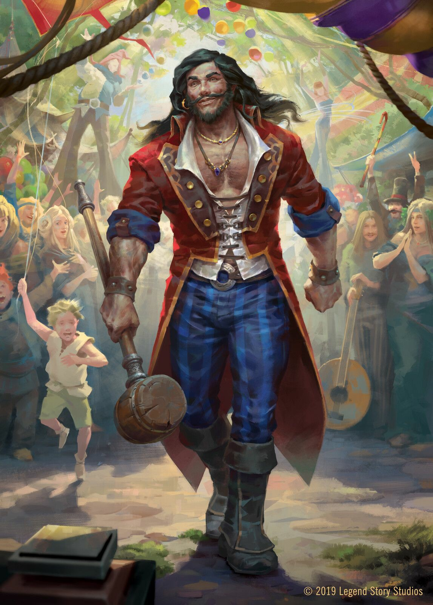
- Zirkusdirektor
- Showman und Frauenheld
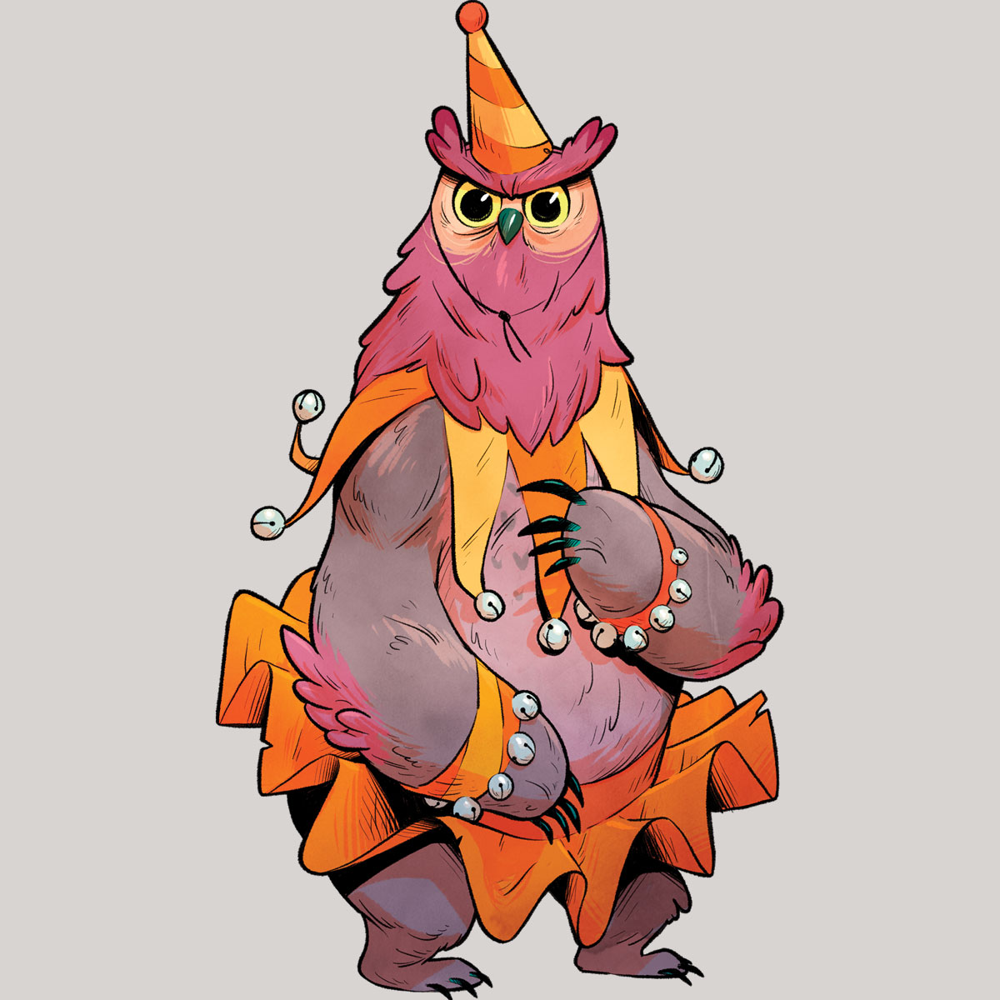
- Owlbear
- dressiert, macht Kunststücke
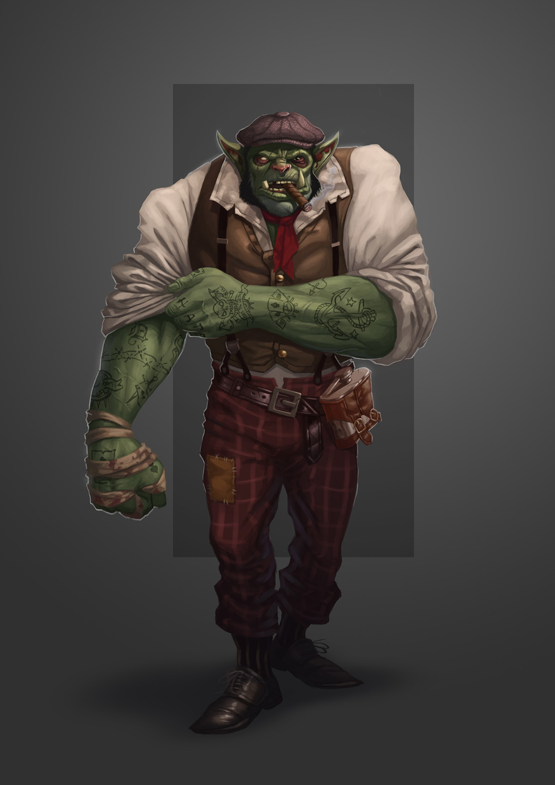
- strongman
- male orc, tätowiert, sehr stark
- extrovertiert, jovial, Frauenheld
- Vetter von Malaga, dem Anführer der Gypsies, die gerade im Westen von Rivaness lagern
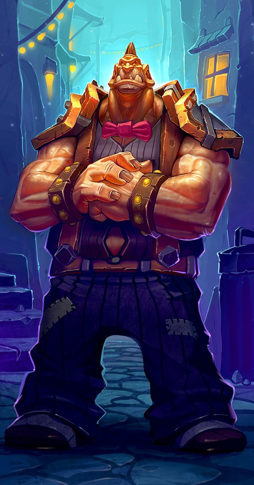
- Türsteher
- male ogre
- hat Angst vor Feuer
- schämt sich weil er weggelaufen ist
- will jetzt bei der Wiederaufbauung des Ortes helfen
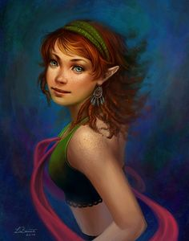
- 3 Seiltänzerinnen
- female halflings, identical twins, keiner kann sie auseinanderhalten
- 2 davon bei Angriff des Feuerklans gestorben (noch unklar wer)
- die dritte bald darauf verschwunden
Rivaness
Korlak Grimtor
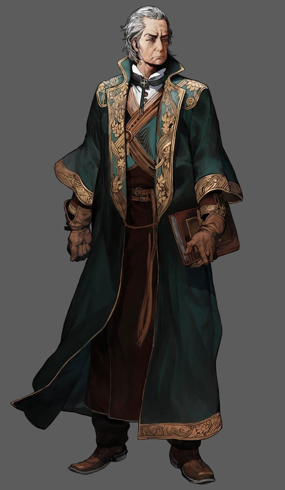
- human male mit weißem Bart, blauen Pelz umschlungen, Bademantel an
- Bürgermeister
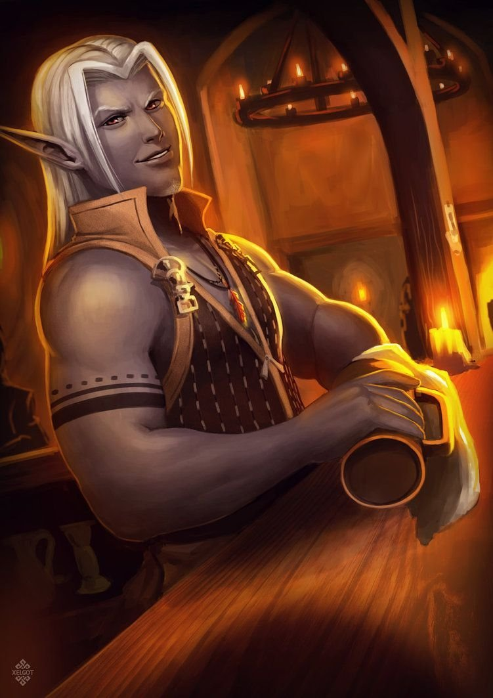
- Besitzer der "Bärenfalle", Taverne
- blasser Dunkel-Elf
- wird rituell geopfert von Vater Lanick
- Gehilfe von Cyphran
- Freund vom toten Harold
- mit irgendwelchen Drogengeschichten verbunden (von Bruno gekauft, gestreckt)
- hatte früher zusammen mit Harold was mit Epha
- Triton-Frau, kann sich in rothaarige menschliche Frau verwandeln
- verbringt eine Nacht mit Liz
- verschwindet geheimnisvoll
- kennt Boris, Harold
- kennt Rufus
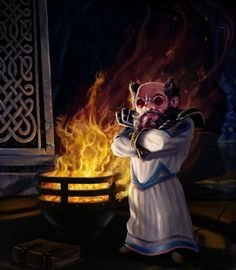
- Gnome, Priester von Tiomyn
- braune Mönchsrobe, Werkzeuge am Strick um Bauch
- hat Novizen Isaias, aber seit Angriff des Feuerklans verschwunden - zusammen mit allen Vorräten des Tempels (auch medizinische)
- scheint irgendwie mit dem Skyrit durchzudrehen (violette Augen), tötet Cythren bei Ritual um Larondil zu heilen (wollte das eigentlich nicht)
- trinkt das Blut von Cythren und weist Kardohr an zu fliehen
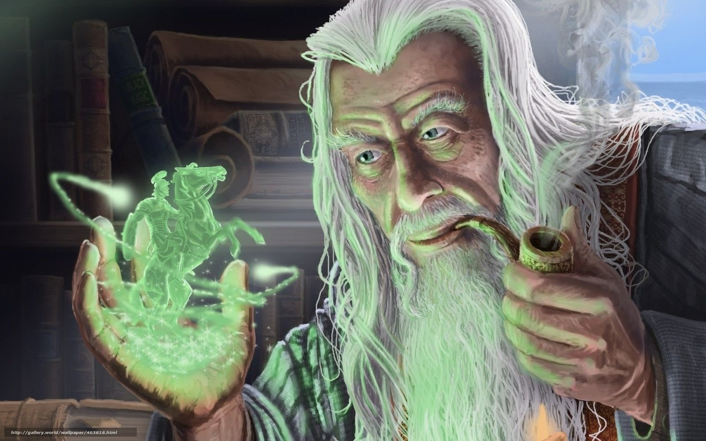
- Kräuterkundler
- etwas außerhalb, vor der Westbrücke
- bärtiger Hippy (Mensch)
- hat so zwei duzend Guffler: kleine Pilzwesen, die ihm beim gärtnern helfen; einen davon hat er im Norden der Stadt verloren
- mag Gandalaf
- Schmied
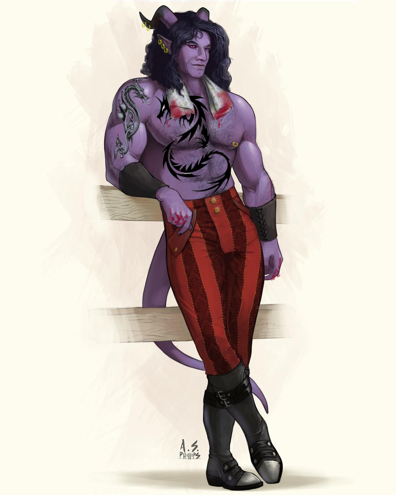
- kein Name genannt
- hat Frau
- Anführer einer kleinen khoraxianischen Barbaren-Gruppe
- Mensch, axt
- Unterlinge: Radolph, Adolph und Strahdolph
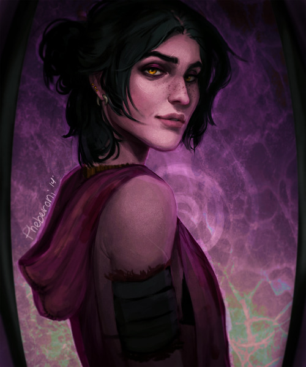
- menschliche Frau, schwarze Haare, gelblich/orange Augen, schlank, jung, Sommersprossen
- Alchemistin des Dorfes
- Vater wurden von Hazel ermordet, Amulett gestohlen - wir holen Amulett zurück
- sie zieht los nach Port Skye
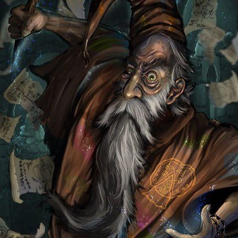
- wohnt auf Insel flussabwärts der Werft
- Zauberer, wohnte früher im Turm nördlich
- hat Angst vor Feuerklan
- hat Verbindung zu Tritons
- war früher Wassermagier, wurde aber verstoßen (lt. Nycholas gab es alten Dreizack, der unterwasser in einem Stein steckte; R wollte den Dreizack für sich, Tanarius war anderer Meinung; Dreizack sei immer noch im Stein)
- mitte 40
- Stoppelbart
- grau meliertes, schleißiges Haar
- 1 fehlender Finger
- Narbe im Gesicht durchs Auge
- Goldzahn
- hat Abigails Vater getötet, Party lässt ihn ohne das gestohlene Amulett und mit Drohbrief bewusstlos liegen
- wacht am nächsten Tag anscheinend geistig eingeschränkt auf
Bogtown
Agnes:
- junge Dame, Bemalung an der Armen
- 2 Katzen, mehrere Raben
- Kräuterkundige
- Freundin von Bruno
- hat Haus und paar Katzen durch Feuerklan verloren
- will vor Skyritwolke nach Amberville fliehen, da jetzt anscheinend neue Stadt
- Gnom, kam nackt aus dem Bag of Many Things
- behauptet Notar für den 2. Pakt zu sein und seit 1000 Jahren eingesperrt (kann sich an nichts erinnern)
- glaubt unschuldig eine Strafe abzusitzen
- will jetzt zur Stormspire
- hat sich umentschieden, lieber ins Dawnmore Keep zum Paladinorden Hooded Lantern
- Firbolg Hippy, Blumen im Haar
- hat Gandalaf dabei, ist auf Reise egal wohin
Feuerklan
Jesta
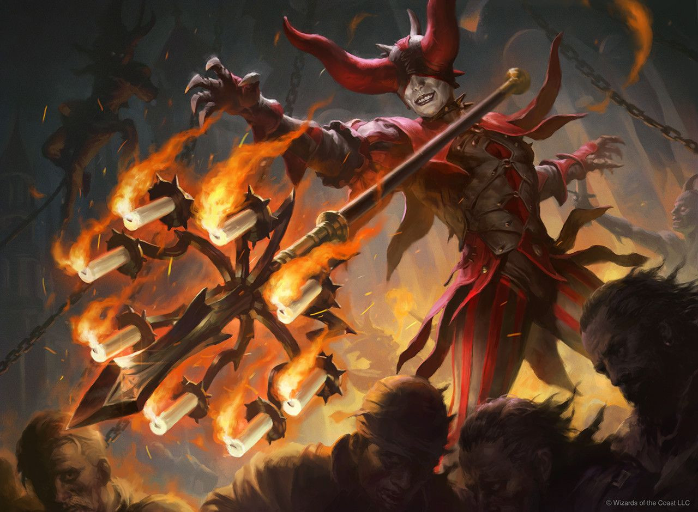
- eine Art Feuer-Clown
- scheint durch Flöte seine Verbündeten von den Effekten von Feuer zu schützen können
- reimt viel über Feuer, das so super und schön sei
- scheint der Anführer des Angriffs auf das Zirkuszelt gewesen zu sein
- tot
Karabuin
Gorazz
- Triton, Anführer einer Delegation zu Rufus
- Anführer der Wassermagier
- früher Freund von Rufus
Dawnmore Keep
Dorian Bartwin
- Sohn vom Baron
- der Baron hasst ihn, hat ihn enterbt
- macht anscheinend regelmäßig Skandale und belästigt Kellnerinnen
- Baron von Dawnmore
- hat Pakt mit Ezshrael, passt ihm aber gut
- glaubt zuerst wir seien "Scorpions" und hätten Leichen für ihn verschwinden lassen, wollte uns dafür 5k gp zahlen
- Anführer der Paladine in Dawnmore
- außerdem Anführer einer geheimen Teufelsjägersekte
- scheint eher einfältig und sehr engstirnig zu sein
- Teufel, entflohen aus Avernus
- Dämonenjägerin, hat aber Posten verlassen
- Ezshrael beauftragt worden sie zu finden - er will dass wir ihm ihren Kopf bringen
- Haut rot wie Blut
- Hörner gezackt gebogen
- schnelle Schwerte, gute Kämpferin
- Geigenbauer im "The Fiddle and the Stick"
- Anführer der Fischergilde
- uns allen unsymphatisch
- wir sehen ihm
Avernus
Ezshrael
- höherer Teufel, unter Zariel
- "Teufel-Stasi"
Gloomfell
Bolwar
- Wächter des Pfortensteins und der Bernsteinpassage
- Minotaure
- getötet von Ragerunner
- von den "Garsgiz" (die kontrolliert die Spinnenwälder)
- Goblin, kleiner als normal, bleiche Haut
- flüchtet vor den Ilflingen
- kann Spinnen summoned
- Ilfling
- militärischer Anführer in Mesa
- Phasebat-Rider
- Bruder von Mondperle
- will Angriff auf Dämonen im Westen starten, um Mondperle zu retten
- Ilfling
- Untergebener von Vilkas
- freundet sich mit Kardohr an
- will an die Oberfläche, darf er aber nicht
- Wirt in der Grotte in Mesa
- Bruder von Bolwar
- Minotaure
- Priester des Mond-dings, wo Mondperle Anführerin ist
- Anführerin der Ilflinge, religiös und weltlich
- sieht aus wie junge Ilfling-Dame, leuchtend blondes Haar
- treibt nackt in einem großen Pool voll schwarzem Wasser (das mal rein war)
- Barius meint "Es gibt keinen Heiler dieser Welt, der ihre Laster von ihrer Seele nehmen kann"
- sie sei der letzte Funken, der in der Dunkelheit verglimmt; die Dunkelheit wird immer stärker
- liegt also im Sterben, nur die Zerstörung der Dunkelheit/Dämonen kann sie retten
- wird nach der Zerstörung von Yee'klor langsam wieder gesünder
- Zwerg
- Schmied für die Ilflinge, Bart und Augen glühen rot
- war mal in der Faber Nostra
- kann Casterit schmieden, bekommt Rohstoff davon von Barius (der große Kristall in Mesa)
Loraine Manor
Feagorn Blackclaw
- unter dem Knochenfürst
- kleingewachsener, bleicher Mann, schwarzer Pelzmantel, vernarbtes Gesicht, Goatee, fettige Haare
Knochfürst
- Anführer der Banditen
- war Berater der Königsfamilie von Umbria
- hat irgendein Projekt am laufen, braucht dafür Blei, hat sich komplett weggesperrt